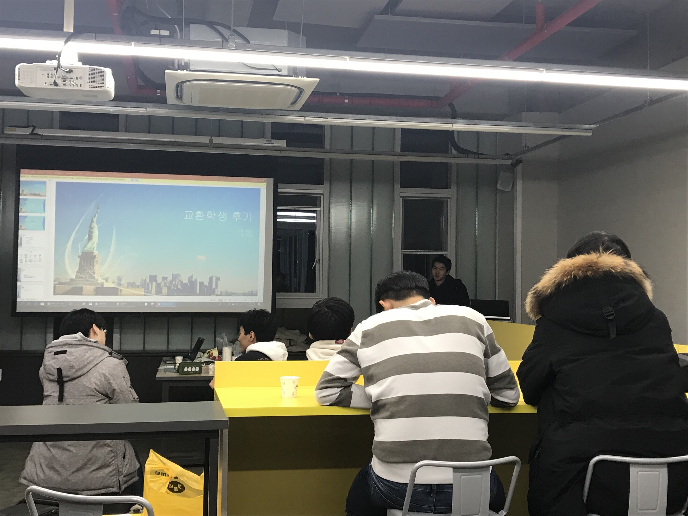

Jaram, the program development academy
Since 1984
대학교에 진학할때부터 관심분야를 정확히 정하고 오거나 잘하는 사람은 많지 않습니다.
우리는 다양한 프로그래밍 분야를 경험한 사람이, 다양한 프로그램 개발 경험을 쌓도록 도와줍니다.
우리는 매학기 개최하는 스터디와 워크샵으로 한가지 주제에 대해 함께 공부합니다.
우리는 깊이 공부하며 프로그래밍 능력과 전공분야에 대한 소양을 기릅니다.
한양대학교 ERICA 소프트웨어융합대학 전공학회 자람JARAM
Main Activity

그룹 스터디
자람에서는 한 학기당 한번씩 관심있는 주제로 같은 주제의 사람들과 그룹 스터디를 실시합니다.
자람에서는 한 학기당 한번씩 관심있는 주제로 같은 주제의 사람들과 그룹 스터디를 실시합니다.

2019년 자람 동계 워크샵
자람에서는 매년 여름방학 및 겨울방학마다 3일간 동아리 워크샵을 실시합니다.
자람에서는 매년 여름방학 및 겨울방학마다 3일간 동아리 워크샵을 실시합니다.

정기 세미나
자람에서는 1년에 한번씩 개인이 직접 세미나를 진행하여 연구분야를 발표합니다.
자람에서는 1년에 한번씩 개인이 직접 세미나를 진행하여 연구분야를 발표합니다.
연간 행사
자람은 관계를 중요시하는 학회입니다.

신년회
매년 1학기 개강 전에 신년회에서 선배님들과 만날 수 있습니다.

체육대회
여름 또는 가을에 체육대회로 학회 내 단합력을 키웁니다.